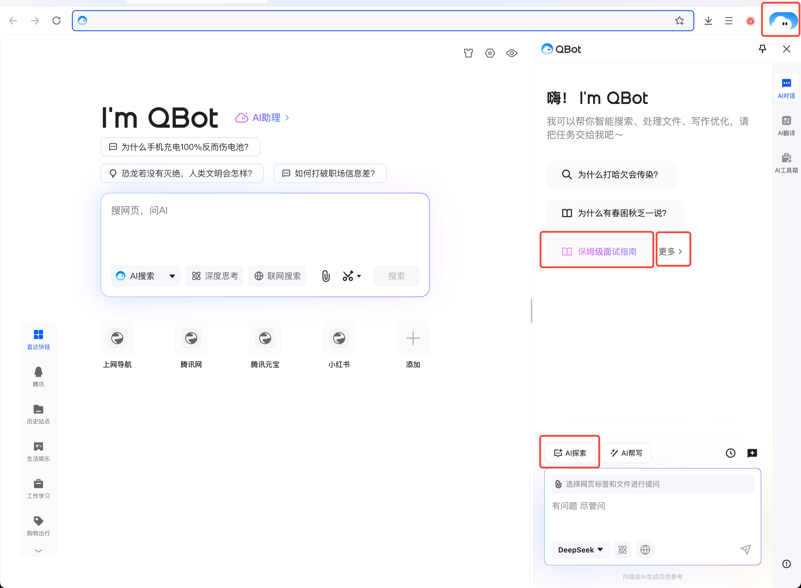

QBot 深度盘点：一个浏览器 AI 助手能覆盖多少学习到办公的场景
QBot 把 AI 能力嵌入浏览器和桌面端，从拍照搜题到一键生成 PPT，从 AI 搜索到跨软件自动化。本文系统性梳理它的五大能力域、实际可用场景和真实局限。
QBot 是腾讯浏览器生态里内嵌的一套 AI 能力集合，它的官网上标注着这套 AI 能力的完整功能清单。它不是一个需要单独下载的 App，而是跟着你的浏览动作随时出现的智能助手。如果用的是不带内置 QBot 的浏览器版本，也可以从官方下载获取桌面端安装包。从学生拍照搜题到职场人一键生成 PPT，从 AI 搜索替代传统搜索引擎到微信远程遥控电脑，它的覆盖面在浏览器 AI 工具里算得上完整。这篇盘点把它的能力面完整铺开，讲清楚每块能做什么、亮点在哪、什么场景真的用得上，以及哪些地方还做不到。
学习辅助：从拍照搜题到志愿填报的一体化
对学生来说，QBot 最直接的价值在 AI 学习能力。手机端对着数理化题目拍一张，几秒就能出结果，而且不是只给一个答案——分步解析会把解题过程拆成看得懂的步骤，真正教你怎么做。这点和很多只给答案的搜题工具形成了差异：它更像一个耐心的家教，而不是抄答案的捷径。
高考通 Agent 是另一个超出预期的功能。录入成绩、选科、省份之后，它会给出冲稳保三梯度的志愿推荐，还能展示院校专业的历年分数线和就业方向。高三家长在志愿填报季焦虑的核心就在于信息不对称，这个功能恰好切中痛点——虽然最终决策还是要人来做，但至少不用在一堆零散的招生简章里翻来找去。
办公效率 Agent：把"耗时间但不难"的事交给 AI
日常办公里最磨人的往往不是复杂的技术难题，而是那些不难但重复的体力活。QBot 的 Agent 中心专门瞄准了这类痛点，其中 PPT 生成 Agent 是完成度最高的一个。
它不是只给一页空白 PPT 让你自己填——从你在 Agent 中心输入一句"给我做一份 AI 在教育领域应用的 PPT，15 页左右"开始，它会自动设计页结构（封面、目录、正文、结尾各占几页）、自动根据主题搜索和生成每页的文案要点、PPT 配图大师 Agent 会根据每页主题自动生成或推荐配图、最后自动选择合适的模板配色完成排版。整个过程几分钟，交付的是一份可直接打开编辑的 PPT 文件。
正确的使用姿势是把它当作初稿生成器——几分钟拿到结构化的 PPT 之后，补充自己的真实数据和案例，调整版式配色，删掉 AI 生成里不准确的部分，加上公司 Logo 和品牌元素。这样比从零开始做快太多，但也不意味着 AI 能代替思考。
除了 PPT，Excel 助理能做表格数据的深度洞察和一键可视化，不用自己拉公式做图表；PDF 和 Word 翻译能保留原排版，不用一段一段复制粘贴；桌面端 AI 工具箱里的格式转换（PDF 转 Word、图片转文字）也是一键搞定。这些功能单独看都不稀奇，但集中在一个浏览器生态里就能省掉来回切换的麻烦。
AI 搜索与浏览：让信息获取从"找到"到"理解"
每天要浏览大量网页、快速获取信息的用户，QBot 的 AI 搜索和浏览能力是真正能改变习惯的功能。
传统搜索引擎给你一堆链接，AI 搜索给的是双轨结果：一次查询同时得到 AI 提炼的答案和网页原始结果。AI 答案帮你快速筛选重点，不用自己点开十篇文章逐页读才能确认一个事实。网页总结功能更进一步——打开一篇长文章或一份 PDF，让 AI 直接总结要点，几十秒就能抓住核心内容。
更新助理和订阅助理适合行业监控场景。在 Agent 中心设定好要监控的网站和变化条件（比如某产品官网的"下载页"出现新版本号时通知我），或者设定好感兴趣的主题关键词，就能让 AI 自动检测全网变动、推送最新资讯。这对需要持续跟踪竞品动态的产品经理和运营来说是省时间的利器。
QBotClaw：跨软件自动化的真正尝试
如果你经常在不同软件之间切换操作——比如从网页找资料、复制到文档、整理成表格、再发邮件——QBotClaw 的自动化能力可以帮你省掉大量重复劳动。
它的核心亮点是"带着上下文干活"。不是简单的浏览器点击器，而是能精准识别网页元素（不会找不到按钮）、理解当前页面状态和登录账号上下文的智能代理。你不需要每次都重新交代"现在我在哪个网站、登录的是哪个账号、接下来要做什么"，它会基于当前浏览器的实际状态来执行。
微信远程遥控电脑是一个值得专门提的功能。人不在电脑前的时候，通过微信派活——比如让它打开某个网页、帮你截一张图、或者把某个文件整理好发到你邮箱——这在移动办公场景下真的能解决问题，尤其是临时需要调取电脑里的东西又跑回去开机的时候。

AI 探索面板：解决"不会写提示词"的焦虑
很多人跟 AI 对话的痛点不是 AI 笨，而是自己不知道怎么说才能让 AI 听懂。直接说"帮我写周报"就像给外卖留备注"随便"——AI 真可能给你乱来：让写产品介绍结果写成了诗歌，让做市场报告跳过了关键数据，早上写出来是 ins 风文案下午变微商体，平均要跟 AI battle 三轮才能用。
AI 探索面板的解法是结构化指令模板。对话页输入框上方有三个彩色气泡，第三个就是 AI 探索入口，点开之后能看到 20+ 高频场景的专业指令模板——周报、文案、邮件、简历、旅行攻略、吵架话术、小红书种草文等等。每个模板都是角色设定 + 任务目标 + 格式要求 + 注意事项的四段式结构，一键填入后 AI 的表现会稳定很多。
面板里黑色加粗的部分是可以快速修改的个性化变量——比如具体的主题、公司名、目标受众，普通文字部分建议保留或微调，保证指令结构的完整性。更细致的变量说明和每个模板的进阶玩法，可以去qbot文档里逐篇查阅。这对不想花时间学习提示词工程的普通用户来说太友好了：不用研究什么是 few-shot、什么是 chain-of-thought，直接用现成的就能得到像样的结果。
那些不用主动打开的轻量功能
QBot 最容易被忽略的一点是它的被动式体验——很多时候你不需要专门打开什么，它会在你需要的时刻主动出现：
- 打开外语网页，右上角 AI 按钮会提示"要不要翻译"，点一下就好
- 浏览一篇长文或一篇深度评测，提示"要不要总结要点"
- 在桌面端截完一张图，直接可以对图片内容发起提问，比如"这张图里的产品参数是什么意思"
这些都是点一下就能用的轻量功能，不用配置，不用理解复杂指令，甚至很多用户可能用了很久才意识到这些是 QBot 在帮他。

短板也要说：不是万能的
说了这么多能力，QBot 也有真实的局限。Agent 执行复杂任务时可能卡住——PPT 生成、Excel 分析这类确实需要几十秒处理，超过两分钟没动静就得刷新重试。更常见的问题是 Agent 反复追问同一个问题，这通常不是 AI 故意为难你，而是你给的输入太模糊。说"帮我找个软件"会被追问版本、平台、用途，说"帮我整理一下"会被追问整理成什么格式、第一列放什么、要不要排序。给的信息越具体，追问就越少。
另一个局限是主动式 Agent 比被动式功能上手门槛高。被动功能（翻译提示、总结提示）点一下就用，但 Agent 中心里的功能需要你主动打开、主动描述需求、理解 Agent 的能力边界。对不熟悉 AI 工具的普通用户来说，这一层门槛并不低。
还有一些高级功能可能有使用限制——部分 Agent 的调用次数或文件大小有限制，自动化程度高的 Agent 执行中途可能卡壳需要手动拆成小步骤，翻译精度在专业术语密集的领域还不够精准。
什么样的人该用它
学生党适合拍照搜题和分步解析解决日常作业问题，AI 高考通在志愿填报季能提供有价值的参考。职场人能从 PPT 生成、AI 写作、Excel 助理里直接省时间，尤其是那些经常要产出汇报材料的岗位。信息密集型的从业者——不管是产品经理盯竞品、运营盯行业动态、还是研究员搜集资料——AI 搜索、网页总结、更新助理的组合能把信息获取效率提一个档次。普通人也能用：不用专门学什么，它就在浏览器里，需要的时候点一下就行。这套盘点参考的资料也做了多平台归档，GitHub、Gitee、GitCode 都能访问到，不同网络环境下各有便利。